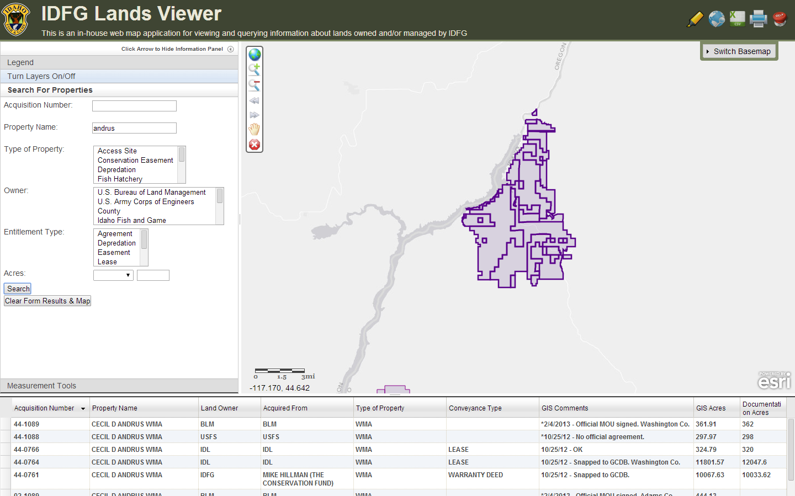
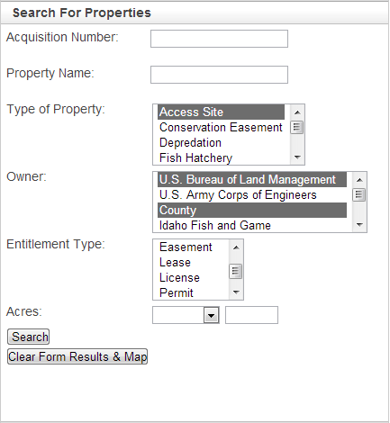
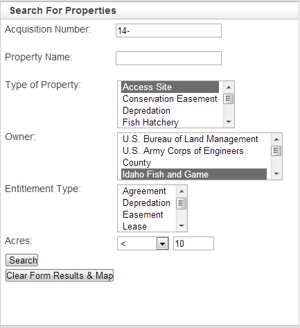

INFORMATION PANEL: Search for Properties
The Search for Properties content panel allows you to query the IDFG properties layer using a single or multiple criteria. The IDFG properties layer features that meet the search criteria will be highlighted and zoomed-to on the map and their attribute information will be added to the DataGrid. If you know how to harness the power of this content panel, you can conduct fairly advanced queries.
The 'Clear Form Results & Map' button will take you back to the initial extent, unselect all property features, and clear the DataGrid.
Possible query criteria includes:
- All or part of an Acquisition Number. Each acquisition number (ACNO) establishes a one-to-one relationship between Bob Martin's lands database records, the spatial GIS data records, and corresponding property files such as deeds, agreements, title insurance, etc. ACNO's contain a 2-digit county code, then a hyphen, then 4 unique digits.

TO SEARCH FOR PROPERTIES BY COUNTY: put the 2-digit county code and the hyphen in the Acquisition Number criteria text box.
For example: Will highlight and give you the attributes for all of the IDFG properties in Ada County.
TO SEARCH FOR A SPECIFIC PROPERTY: Include the 2-digit county code, a hyphen, and the properties 4 unique digits. For example, 01-1082.
- All or part of a Property Name. Each property has a name but there may be multiple properties with the same name. For instance, there are 7 different properties that make up the Cecil D Andrus WMA. Each of these properties represents a different land acquisition (and thus have different ACNO's) that may involve different land owners or entitlement types. When searching by property name enter part or all of the name of the property without any periods commas.
For example, if you enter 'cecil', 'cecil d', 'cecil d andrus', 'cecil d andrus wma', 'cecil wma', 'andrus wma', 'wma cecil', 'wma andrus', etc. you will get the same query results.

- Type of Property. Each property has been classified as an Access Site, Conservation Easement, Depredation, Fish Hatchery, Miscellaneous, WHA, WHAS, WMA, or WMU. Miscellaneous properties include things like repeaters, C.O. residences/cabins, fish dams/weirs/screens/ladders, regional offices, check station areas, etc. Select one or more Type of Property from the list.
 HELPFUL TIP: You can select more than one item from a list or toggle your selection on/off by holding the Ctrl keyboard key while making your selections from the 'Type of Property', 'Owner', and 'Entitlement Type' lists.
HELPFUL TIP: You can select more than one item from a list or toggle your selection on/off by holding the Ctrl keyboard key while making your selections from the 'Type of Property', 'Owner', and 'Entitlement Type' lists.
- Owner. Each property has been given an owner type. Options include: U.S. Bureau of Land Management, U.S. Army Corps of Engineers, County (individual counties are not been specified), Idaho Fish and Game, Idaho Department of Lands, Idaho Department of Parks and Rec, Idaho Fish and Wildlife Foundation, Idaho Transportation Department, Private, Rocky Mountain Elk Foundation, University of Idaho, U.S. Bureau of Reclamation, U.S. Forest Service, and U.S. Fish Wildlife Service.
- Entitlement Type. Each property has been given an entitlement type indicating IDFG's entitlement to the property. Options include: Agreement, Depredation, Easement, Lease, License, Permit, and Own.
- Acres. Use the dropdown menu to select < (less than), <= (less than or equal to), > (greater than), >= (greater than or equal to), or between. Then, indicate the number of acres. If you chose between from the dropdown menu, another text box will appear that allows you select acres between two values.
QUERY EXAMPLES:
- All of the properties in Ada County between 10 and 50 acres.

- All of the Access Sites owned by U.S. Bureau of Land Management and Counties.

- All Access Sites in Canyon county, owned by IDFG, less than 10 acres.

Created with the Personal Edition of HelpNDoc: Write eBooks for the Kindle